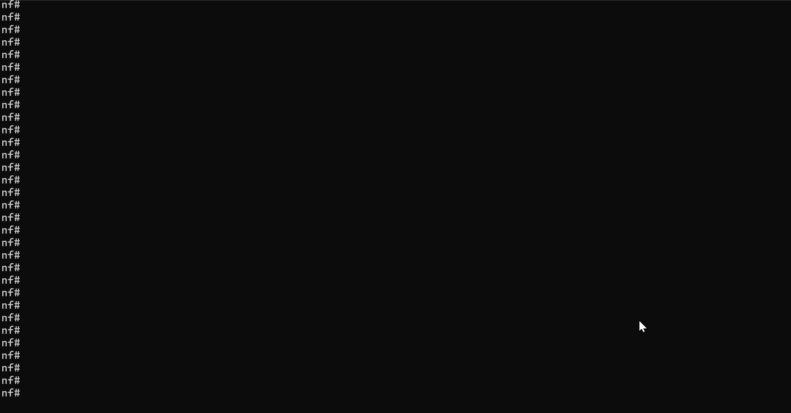
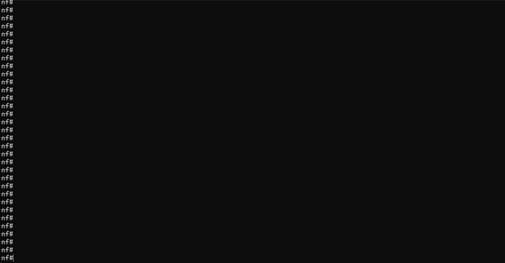

Nornir Service "Task" Task¤
task api name:
task
The Nornir Service "Task" Task is a versatile component of NorFab's Nornir service, designed to execute any arbitrary Nornir task plugin function. This task provides network automation and developer engineers with the flexibility to run custom Nornir tasks, enabling them to tailor their network automation workflows to meet specific requirements.
Key features of the Nornir Service "Task" Task include:
-
Custom Task Execution: The "Task" Task allows you to run custom Nornir task functions, which can be referenced using the OS path to the custom task Python file stored on broker or using dot notation to reference an import module.
-
Integration with Nornir Plugins: The Nornir framework supports a wide range of community-built plugins, which can be called directly or leveraged to extend the functionality of your custom tasks. By integrating these plugins, you can enhance your automation capabilities and streamline complex network operations. Reference the Nornir Plugins page for a list of available plugins.
-
Scalability and Reusability: Custom Nornir tasks can be designed to be scalable and reusable, allowing you to apply the same task logic across different network environments and scenarios. This promotes consistency and efficiency in your network automation workflows, reducing the need for repetitive coding and manual intervention.
Nornir Tasks Sample Usage¤
Example of calling Nornir custom task function stored on NORFAB
broker under nornir_tasks/echo.py file path:
├───inventory.yaml
└───nornir_tasks
└───echo.py
Task echo.py takes provided arguments and echoes them back in
results:
from nornir.core.task import Result, Task
def task(task: Task, **kwargs) -> Result:
task.name = "echo"
return Result(host=task.host, result=kwargs)
Example
C:\nf>nfcli
Welcome to NorFab Interactive Shell.
nf#
nf#nornir
nf[nornir]#task
nf[nornir-task]#plugin nf://nornir_tasks/echo.py arguments {"foo": "bar"} FC spine
ceos-spine-1:
echo:
foo: bar
ceos-spine-2:
echo:
foo: bar
nf[nornir-task]#top
nf#
Demo

Above runs echo.py custom Nornir task taking arguments {"foo": "bar"}
as an input and echoing them back. Task only executed for
Nornir hosts that contain ceos-spine in their hostname as
we use FC - "Filter Contains" Nornir hosts targeting
filter.
inventory.yaml should be located in same folder where we
start nfcli, unless nfcli -i path_to_inventory.yaml flag
used. Refer to Getting Started
section on how to construct inventory.yaml file
This code is complete and can run as is
import pprint
from norfab.core.nfapi import NorFab
if __name__ == '__main__':
nf = NorFab(inventory="inventory.yaml")
nf.start()
client = nf.make_client()
res = client.run_job(
service="nornir",
task="task",
kwargs={
"plugin": "nf://nornir_tasks/echo.py",
"argument": {"foo": "bar"},
"FC": "ceos-spine"
}
)
pprint.pprint(res)
nf.destroy()
Once executed, above code should produce this output:
C:\nf>python nornir_task_docs.py
{'nornir-worker-1': {'errors': [],
'failed': False,
'messages': [],
'result': {'ceos-spine-1': {'echo': {'argument': {'foo': 'bar'}}},
'ceos-spine-2': {'echo': {'argument': {'foo': 'bar'}}}},
'task': 'nornir-worker-1:task'}}
Refer to Getting Started section on
how to construct inventory.yaml file.
Use Community Module Task¤
It is possible to run any Nornir task plugin created by open
source community. For example, to use netmiko_send_commands from
nornir_netmiko module need to set plugin argument to
nornir_netmiko.tasks.netmiko_send_commands value and supply arguments
option to provide further task parameters.
Example
C:\nf>nfcli
Welcome to NorFab Interactive Shell.
nf#
nf#nornir
nf[nornir]#task
nf[nornir-task]#plugin "nornir_netmiko.tasks.netmiko_send_command" arguments {"command_string": "show hostname"} FC spine
ceos-spine-1:
netmiko_send_command:
Hostname: ceos-spine-1
FQDN: ceos-spine-1
ceos-spine-2:
netmiko_send_command:
Hostname: ceos-spine-2
FQDN: ceos-spine-2
nf[nornir-task]#top
nf#
Demo

Above runs netmiko_send_command Nornir task from
nornir_netmiko module and collects show hostname command
output from hosts that contain ceos-spine in their host name
since the use of targeting filter FC - "Filter Contains".
inventory.yaml should be located in same folder where we
start nfcli, unless nfcli -i path_to_inventory.yaml flag
used. Refer to Getting Started
section on how to construct inventory.yaml file
This code is complete and can run as is
import pprint
from norfab.core.nfapi import NorFab
if __name__ == '__main__':
nf = NorFab(inventory="inventory.yaml")
nf.start()
client = nf.make_client()
res = client.run_job(
service="nornir",
task="task",
kwargs={
"plugin": "nornir_netmiko.tasks.netmiko_send_command",
"command_string": "show hostname",
"FC": "ceos-spine"
}
)
pprint.pprint(res)
nf.destroy()
Notice slight difference, python api does not make use of
arguments option and need to supply task parameters as is
inside of kwargs dictionary.
Once executed, above code should produce this output:
C:\nf>python nornir_task_module_docs.py
{'nornir-worker-1': {'errors': [],
'failed': False,
'messages': [],
'result': {'ceos-spine-1': {'netmiko_send_command': 'Hostname: '
'ceos-spine-1\n'
'FQDN: '
'ceos-spine-1'},
'ceos-spine-2': {'netmiko_send_command': 'Hostname: '
'ceos-spine-2\n'
'FQDN: '
'ceos-spine-2'}}}
Refer to Getting Started section on
how to construct inventory.yaml file.
NORFAB Nornir Task Shell Reference¤
NorFab shell supports these command options for Nornir task task:
nf#man tree nornir.task
root
└── nornir: Nornir service
└── task: Run Nornir task
├── timeout: Job timeout
├── workers: Filter worker to target, default 'all'
├── add_details: Add task details to results
├── run_num_workers: RetryRunner number of threads for tasks execution
├── run_num_connectors: RetryRunner number of threads for device connections
├── run_connect_retry: RetryRunner number of connection attempts
├── run_task_retry: RetryRunner number of attempts to run task
├── run_reconnect_on_fail: RetryRunner perform reconnect to host on task failure
├── run_connect_check: RetryRunner test TCP connection before opening actual connection
├── run_connect_timeout: RetryRunner timeout in seconds to wait for test TCP connection to establish
├── run_creds_retry: RetryRunner list of connection credentials and parameters to retry
├── tf: File group name to save task results to on worker file system
├── tf_skip_failed: Save results to file for failed tasks
├── diff: File group name to run the diff for
├── diff_last: File version number to diff, default is 1 (last)
├── progress: Emit execution progress
├── table: Table format (brief, terse, extend) or parameters or True
├── headers: Table headers
├── headers_exclude: Table headers to exclude
├── sortby: Table header column to sort by
├── reverse: Table reverse the sort by order
├── FB: Filter hosts by name using Glob Patterns
├── FH: Filter hosts by hostname
├── FC: Filter hosts containment of pattern in name
├── FR: Filter hosts by name using Regular Expressions
├── FG: Filter hosts by group
├── FP: Filter hosts by hostname using IP Prefix
├── FL: Filter hosts by names list
├── FM: Filter hosts by platform
├── FX: Filter hosts excluding them by name
├── FN: Negate the match
├── hosts: Filter hosts to target
├── *plugin: Nornir task.plugin.name to import or nf://path/to/plugin/file.py
└── arguments: Plugin arguments JSON formatted string
nf#
* - mandatory/required command argument
Python API Reference¤
Task to invoke any of supported Nornir task plugins. This function
performs dynamic import of requested plugin function and executes
nr.run using supplied args and kwargs
plugin attribute can refer to a file to fetch from file service. File must contain
function named task accepting Nornir task object as a first positional
argument, for example:
# define connection name for RetryRunner to properly detect it
CONNECTION_NAME = "netmiko"
# create task function
def task(nornir_task_object, **kwargs):
pass
CONNECTION_NAME
CONNECTION_NAME must be defined within custom task function file if
RetryRunner in use, otherwise connection retry logic skipped and connections
to all hosts initiated simultaneously up to the number of num_workers.
Parameters:
| Name | Type | Description | Default |
|---|---|---|---|
plugin
|
str
|
(str) |
required |
kwargs
|
(dict) arguments to use with specified task plugin |
{}
|
Source code in norfab\workers\nornir_worker.py
599 600 601 602 603 604 605 606 607 608 609 610 611 612 613 614 615 616 617 618 619 620 621 622 623 624 625 626 627 628 629 630 631 632 633 634 635 636 637 638 639 640 641 642 643 644 645 646 647 648 649 650 651 652 653 654 655 656 657 658 659 660 661 662 663 664 665 666 667 668 669 670 671 672 673 674 675 | |